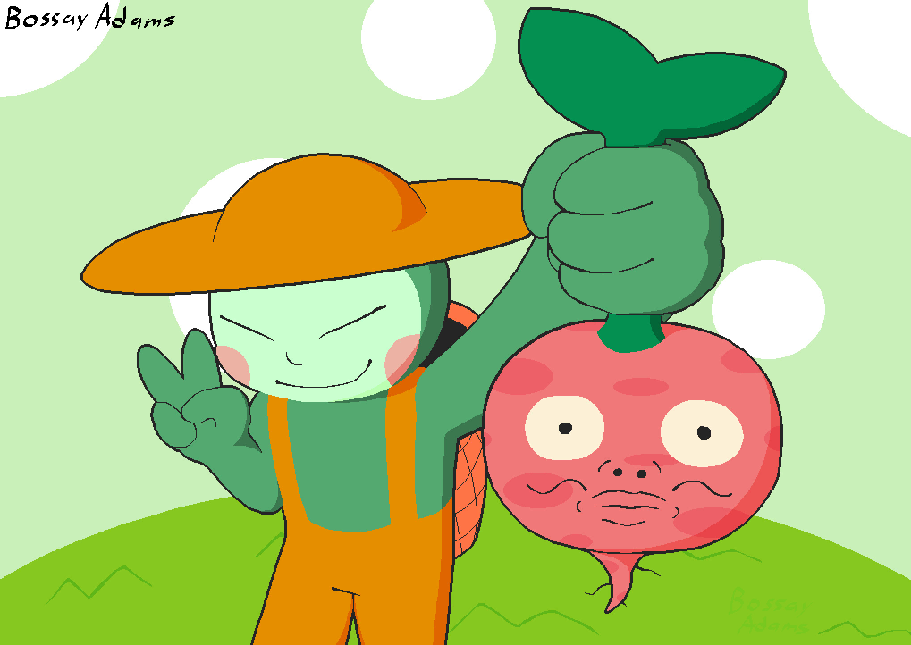
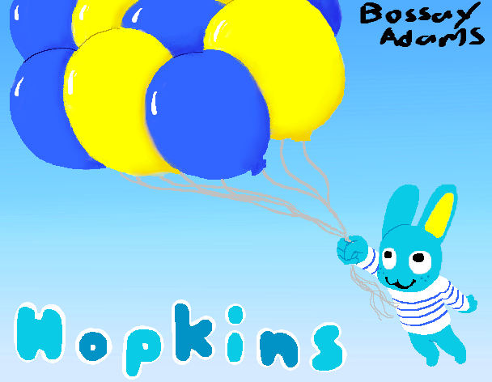
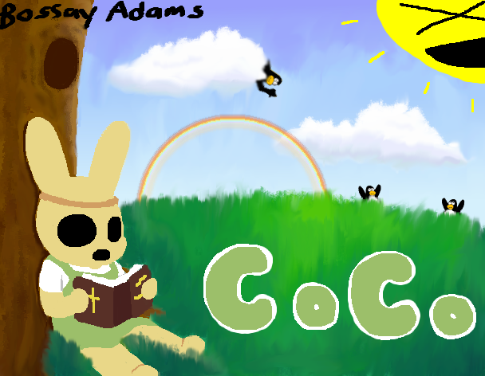
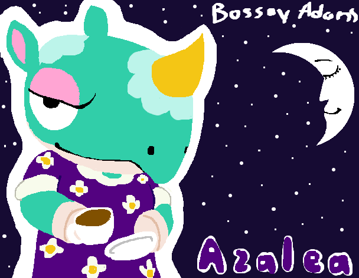
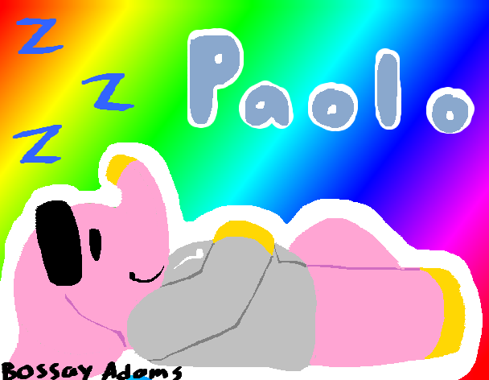
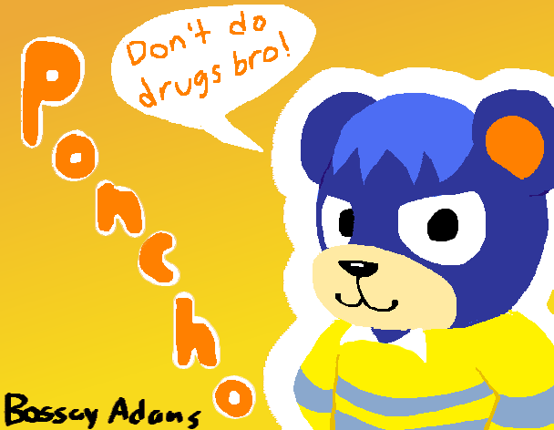

| Image | Title & Date | Description |
|---|---|---|
|  | Crop Stomper (3/31/25) | To celebrate the announcement of a new Rhythm Heaven game, I drew my favorite Rhythm Heaven character. Also, I think I'm slowly starting to hate shading less. |
|  | Hopkins (3/2/25) | Don't worry, this drawing takes place in Hopkins' dream, which explains why he is not terrified to be suspended 50,000 feet in the air by some balloons. |
|  | Coco (2/22/25) | This is the first time I actually attempted digital painting and I am extremely satisfied with the final product. |
|  | Azalea (2/22/25) | Continuing my Animal Crossing drawing spree. |
|  | Paolo (2/22/25) | Fun Fact: This is my favorite Animal Crossing villager and I will not tolerate any slander towards him. You mess with Paolo, you mess with me. *Shows off really muscular arms* |
|  | Poncho (2/22/25) | My first (public) drawing of 2025! Woo! This drawing and the next few ones use Tux Paint because I saw a few other people use it and it looked fun. To be honest, I think Tux Paint might be my new favorite art program. Give it a whirl if you have time. |